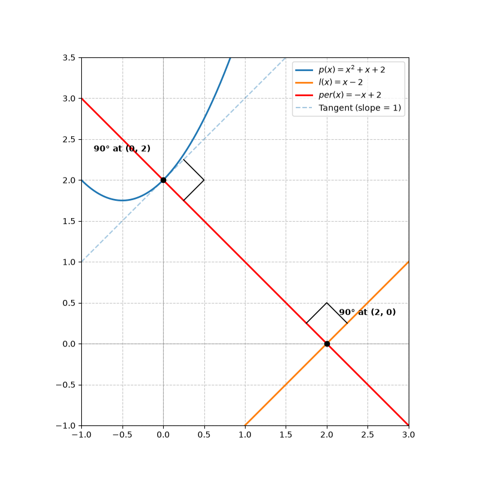
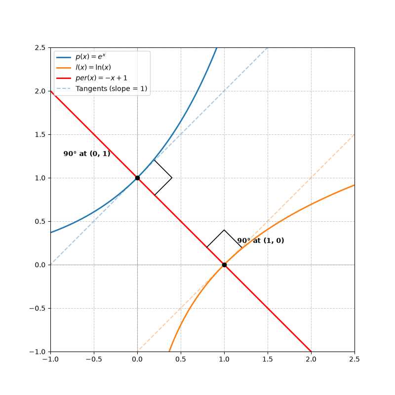

Shortest distance between two functions Link to heading
I am interested in knowing what is the shortest straight-line distance between two functions $f(x)$ and $g(x)$.
To compute this, let $A$ and $B$ be two points such that
- $A$ and $B$ determine the line $$y = mx + b.$$
- $A(x,y)$ such that $y = f(x)$ i.e. A belongs to $f(x)$
- $B(x,y)$ such that $y = g(x)$ i.e. A belongs to $g(x)$
This means that simultaenously,
$$y_A = f(x_A) = mx_A + b.$$$$y_B = g(x_B) = mx_B + b.$$
Distance minimization Link to heading
Using the Euclidean distance bewteen $A(x_A, y_A)$ and $B(x_B, y_B)$,
$$|d(A,B)|^2 = (x_B - x_A)^2 + (g(x_B) - f(x_A))^2$$To be the shortest distance, it must be a minimum.
$$d = |d(A,B)|^2 = d(x_A, x_B)^2 \quad \text{must be minimal.}$$the total differential
$$d(d(x_A, x_B)^2) = \vec{\nabla}(d(x_A, x_B)^2) \cdot d\vec{r} = 0$$let’s calculate
$$\frac{\partial}{\partial x_A} d^2(x_A, x_B) = 2(x_A - x_B)\frac{dx_A}{dx_A} + 2(g(x_B) - f(x_A))\left(\frac{df(x_A)}{dx_A}\right)$$(note that: $(x_B - x_A)(-\frac{dx_A}{dx_A})$)
$$\frac{\partial}{\partial x_B} d^2(x_A, x_B) = 2(x_B - x_A)\frac{dx_B}{dx_B} + 2(g(x_B) - f(x_A))\frac{dg(x_B)}{dx_B}$$$$d\,d^2 = 0 \Rightarrow \frac{\partial}{\partial x_A} d^2(x_A, x_B)\,dx_A + \frac{\partial}{\partial x_B} d^2(x_A, x_B)\,dx_B = 0$$However!, to compute the extreme value, it is enough to compute $\vec{\nabla} d^2(x_A, x_B) = \vec{0}$.
Recapping
$$d^2 = (x_B - x_A)^2 + (g(x_B) - f(x_A))^2$$$$\frac{\partial}{\partial x_A} d^2 = 2(x_B - x_A)(-1) + 2(g(x_B) - f(x_A))\frac{df(x_A)}{dx_A}$$
$$\frac{\partial}{\partial x_B} d^2 = 2(x_B - x_A)(1) + 2(g(x_B) - f(x_A))\frac{dg(x_B)}{dx_B}$$
which yields the system
$$\begin{cases} -&(x_B - x_A) - (g(x_B) - f(x_A))\dfrac{df(x_A)}{dx_A} = 0 \\ &(x_B - x_A) + (g(x_B) - f(x_A))\dfrac{dg(x_B)}{dx_B} = 0. \end{cases}$$from this system I see that it is possible to find
$$(g(x_B) - f(x_A))\left[\frac{dg(x_B)}{dx_B} - \frac{df(x_A)}{dx_A} \right] = 0$$Which it is interesting, as it suggests that ヅ
$$\frac{df(x_A)}{dx} = \frac{dg(x_B)}{dx}.$$or $g(x_B) = f(x_A)$, it might happen too.
Local slopes at the line joining the curves are parallel Link to heading
A condition that appears necessary is that the orthogonality between the line connecting with the shortest distance and the local slopes that it crosses must be perpendicular. This implies that
$$\frac{df(x_A)}{dx} = \frac{dg(x_B)}{dx}.$$Which is just the result I got. This means that both slopes must be the same at their corresponding points connected by the minimum distance line.
I wonder how it could be proven that the line joining the shortest distance between curves is $\perp$ perpendicular to the tangent slopes?.
Shortest distance is perpendicular to local slopes Link to heading
As an interesting consequence from minimizing $d^2(A,B)$, is that I arrived at
$$(x_B - x_A) + (g(x_B) - f(x_A))\frac{df}{dx}(x_A) = 0$$now, by rearranging terms
$$-(x_B - x_A) = (g(x_B) - f(x_A))\frac{df}{dx}(x_A)$$$$-1 = \left[\frac{g(x_B) - f(x_A)}{x_B - x_A}\right]\frac{df}{dx}(x_A)$$
which implies that indeed the shortest distance is perpendicular! as the slopes follow the relation
$$m \cdot m^\perp = -1$$Summary Link to heading
In summary, the most relevant relations we have are:
$$\begin{cases} (x_B - x_A) + (g(x_B) - f(x_A))\dfrac{df}{dx}(x_A) = 0 \\ (x_B - x_A) + (g(x_B) - f(x_A))\dfrac{dg}{dx}(x_B) = 0. \end{cases}$$$$\frac{df}{dx}(x_A) = \frac{dg}{dx}(x_B)$$
$$f(x_A) = \frac{df}{dx}(x_A)\,x_A + b$$$$g(x_B) = \frac{dg}{dx}(x_B)\,x_B + b.$$
and finally the consequences
$$m^\perp = \frac{f(x_A) - g(x_B)}{x_A - x_B} \quad \text{and} \quad m \cdot m^\perp = -1$$therefore $m = \left.\dfrac{df}{dx}(x_A) = \dfrac{dg}{dx}(x)\right|_{x=x_B}$
so
$$ \left[\dfrac{f(x_A) - g(x_B)}{x_A - x_B}\right] \dfrac{df}{dx}(x_A) = -1 \\ $$and
$$ \left[\dfrac{f(x_A) - g(x_B)}{x_A - x_B}\right] \dfrac{dg}{dx}(x_B) = -1 $$Caveat Link to heading
It is easy to see that if $f(x) = g(x)$ for some $x$, the equations above won’t work. Take $x_A = x_B$ and $f(x_A) = g(x_B)$, then the equations become $0 = 0$ which is not useful. In this case, the shortest distance is zero, which is intuitive.
Application Link to heading
Easy application Link to heading
The simplest way to verify the relationships using a problem, a parabola and a line come to mind:
$$f(x) = x^2 + x + 2 \quad \text{and} \quad g(x) = x - 2$$Of course their derivatives are,
$$\frac{df}{dx} = 2x + 1 \qquad \frac{dg}{dx} = 1.$$Computing the relationships we have,
$$g(x_B) = x_B - 2 \qquad f(x_A) = x_A^2 + x_A + 2$$$$g(x_B) - f(x_A) = x_B - 2 - x_A^2 - x_A - 2$$
$$= x_B - x_A^2 - x_A - 4$$$$\frac{df(x_A)}{dx_A} = 2x_A + 1 \qquad \frac{dg(x_B)}{dx_B} = 1$$
Therefore we have the relationship
$$(g(x_B) - f(x_A))\left(\frac{dg(x_B)}{dx_B} - \frac{df(x_A)}{dx_A} \right) = 0$$$$(x_B - x_A^2 - x_A - 4)(1 - 2x_A - 1 ) = 0.$$
$$\underbrace{(2x_A)}_{\text{Ⓐ}} \underbrace{(x_B - x_A^2 - x_A - 4)}_{\text{Ⓑ}} = 0$$
Ⓐ $= 0 \Rightarrow x_A = 0$
Ⓑ $= 0 \Rightarrow x_B = x_A^2 + x_A + 4$.
the simple path, take $x_A = 0$. Knowing that
$$(x_B - x_A) + (g(x_B) - f(x_A))(g'(x_B)) = 0$$$$(x_B - 0) + (g(x_B) - f(0))(1) = 0$$
$$x_B + (x_B - 2 - ( 0 + 0 + 2))(1) = 0$$
$$2 x_B - 4 = 0$$
$$x_B = 2$$
Hence
$$ g(x_B) = m x_B + b $$and
$$ f(x_A) = m x_A + b $$$$ m = \frac{g(x_B) - f(x_A)}{x_B - x_A} = \frac{0-2}{2-0} = -1 $$and $b = 2$ which is easily computed from $0 = -1*2 + b$.
The perpendicular line that joins both graphs is
$$ y = -x + 2 $$and the distance is
$$|d(A,B)|^2 = (2-0)^2 + (0 - 2)^2 = 4 + 4 = 8$$$$|d(A,B)| = \sqrt{8}$$

Stepping up difficulty Link to heading
I want to challenge myself and test it with
$$y = e^x = f(x) \qquad y = \operatorname{Ln} x = g(x).$$$$\frac{dy}{dx} = \frac{df(x)}{dx} = e^x \qquad \frac{dg(x)}{dx} = \frac{1}{x}$$
the system of equations to solve
$$\begin{cases} \dfrac{df}{dx}(x_A) = \dfrac{dg}{dx}(x_B) \\ (x_B - x_A) + [g(x_B) - f(x_A)]\dfrac{dg}{dx}(x_B) = 0. \quad \text{or } \dfrac{df}{dx}(x_A) \end{cases}$$$$\begin{cases} e^{x_A} = \dfrac{1}{x_B} & \text{①} \\ (x_B - x_A) + [\operatorname{Ln} x_B - e^{x_A}] e^{x_A} = 0. & \text{②} \end{cases}$$from ① $\quad x_B = e^{-x_A} \quad$ into ②
$$(e^{-x_A} - x_A) + [\operatorname{Ln} x_B - e^{x_A}] e^{x_A} = 0.$$$$e^{-x_A} - x_A + [\underbrace{\operatorname{Ln} e^{-x_A}}_{= -x_A} - e^{x_A}] e^{x_A} = 0$$
$$e^{-x_A} - x_A - x_A e^{x_A} - e^{2x_A} = 0$$
$$x_A(e^{x_A} - 1) - e^{2x_A} + e^{-x_A} = 0.$$
$\begin{pmatrix} \text{let} & \alpha = e^{x_A} & \alpha^2 = e^{2x_A} \\ & \alpha^{-1} = e^{-x_A} & \operatorname{Ln}\alpha = \operatorname{Ln} e^{x_A} = x_A \end{pmatrix}$
$$x_A(\alpha - 1) - \alpha^2 + \alpha^{-1} = 0.$$$$x_A \alpha (\alpha - 1) - \alpha^3 + 1 = 0. \qquad \times \alpha$$
$$\operatorname{Ln}\alpha (\alpha (\alpha - 1)) - \alpha^3 + 1 = 0, \qquad \alpha \neq 0.$$
An ansatz $\alpha = 1$
$$\underbrace{\operatorname{Ln}(1)}_{=0} (1(1-1)) - 1^3 + 1 = 0$$$$\alpha = 1 = e^{x_A} \Rightarrow x_A = 0$$$$x_B = e^{-x_A} = 1$$$$f(x=0) = e^0 = 1 = y_1 \qquad g(x=1) = \ln 1 = 0 \quad y_2 = 0.$$$$\begin{matrix} x_A = 0 & y_1 = 1 \\ x_B = 1 & y_2 = 0. \end{matrix} \qquad m = \frac{0 - 1}{1 - 0} = -1$$
The line is $y = mx + b$. therefore
$$1 = m \cdot 0 + b \Rightarrow b = 1$$$$0 = -1 \times 1 + b \Rightarrow b = 1.$$
minimum distance is obtained through the line
$$ y = -x + 1 $$The distance computes as
$$|d(A,B)|^2 = (1-0)^2 + (0 - 1)^2 = 2 $$$$|d(A,B)| = \sqrt{2}$$
